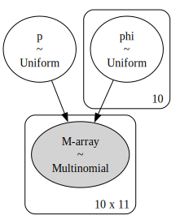
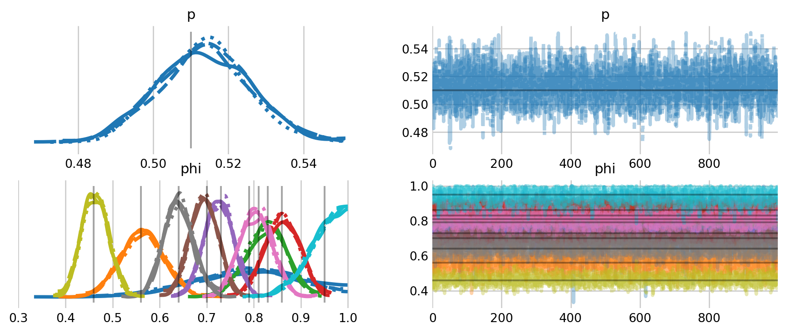
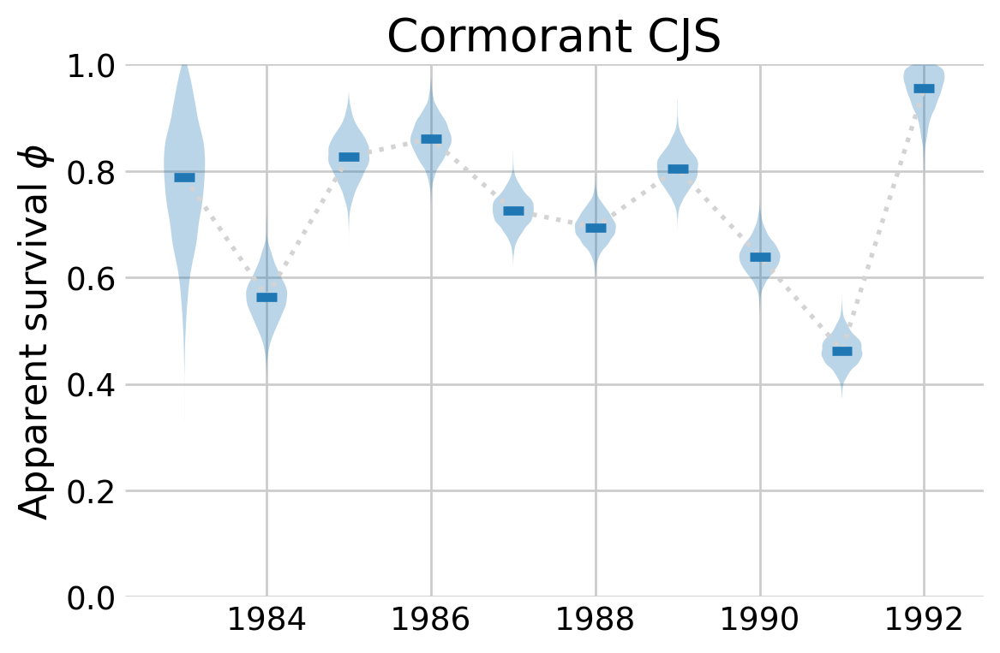

%config InlineBackend.figure_format = 'retina'
from pymc.distributions.dist_math import factln
from scipy.linalg import circulant
import seaborn as sns
import numpy as np
import matplotlib.pyplot as plt
import arviz as az
import pymc as pm
import pytensor.tensor as pt
# plt.rcParams['figure.dpi'] = 600
plt.style.use('fivethirtyeight')
plt.rcParams['axes.facecolor'] = 'white'
plt.rcParams['figure.facecolor'] = 'white'
plt.rcParams['axes.spines.left'] = False
plt.rcParams['axes.spines.right'] = False
plt.rcParams['axes.spines.top'] = False
plt.rcParams['axes.spines.bottom'] = False
sns.set_palette("tab10")
def create_recapture_array(history):
"""Create the recapture array from a capture history."""
_, occasion_count = history.shape
interval_count = occasion_count - 1
recapture_array = np.zeros((interval_count, interval_count), int)
for occasion in range(occasion_count - 1):
# which individuals, captured at t, were later recaptured?
captured_this_time = history[:, occasion] == 1
captured_later = (history[:, (occasion + 1):] > 0).any(axis=1)
now_and_later = captured_this_time & captured_later
# when were they next recaptured?
remaining_history = history[now_and_later, (occasion + 1):]
next_capture_occasion = (remaining_history.argmax(axis=1)) + occasion
# how many of them were there?
ind, count = np.unique(next_capture_occasion, return_counts=True)
recapture_array[occasion, ind] = count
return recapture_array.astype(int)
def create_m_array(history):
'''Create the m-array from a capture history.'''
# leftmost column of the m-array
number_released = history.sum(axis=0)
# core of the m-array
recapture_array = create_recapture_array(history)
number_recaptured = recapture_array.sum(axis=1)
# no animals that were released on the last occasion are recaptured
number_recaptured = np.append(number_recaptured, 0)
never_recaptured = number_released - number_recaptured
# add a dummy row at the end to make everything stack
zeros = np.zeros(recapture_array.shape[1])
recapture_array = np.row_stack((recapture_array, zeros))
# stack the relevant values into the m-array
m_array = np.column_stack((number_released, recapture_array, never_recaptured))
return m_array.astype(int)
def fill_lower_diag_ones(x):
'''Fill the lower diagonal of a matrix with ones.'''
return pt.triu(x) + pt.tril(pt.ones_like(x), k=-1)Cormack-Jolly-Seber
Estimating survival with CJS models in PyMC
In this notebook, I explore the Cormack-Jolly-Seber (CJS) model for estimating survival using capture-recapture data in PyMC. I have drawn considerable inspiration from Austin Rochford’s notebook on capture-recapture in PyMC, the second chapter of my dissertation (a work in progress), and McCrea and Morgan (2014).
Cormack-Jolly-Seber
The goal of the CJS model is to estimate survival, accounting for capture probabilities being less than one. There are many methods for estimating parameters in the model, including state-space formulations that explicitly model the latent alive/dead state \(z.\) Following the theme of the previous notebooks, I instead marginalize this variable out of the model by using the so-called \(M\)-array. This is an array that contains the sufficient statistics for the CJS models. For example, \(m_{1,2}\) is the number of individuals that were released on at \(t=1\) and were first recaptured on \(t=2.\)
| Number Released | Number recaptured | Never recaptured | |||
|---|---|---|---|---|---|
| 1982 | 1983 | 1984 | |||
| 1981 | \(R_1\) | \(m_{1,2}\) | \(m_{1,3}\) | \(m_{1,4}\) | \(R_1-m_{1\cdot}\) |
| 1982 | \(R_2\) | \(m_{2,3}\) | \(m_{2,3}\) | \(R_2-m_{2\cdot}\) | |
| 1983 | \(R_3\) | \(m_{3,4}\) | \(R_3-m_{3\cdot}\) |
As an example, I use the cormorant data from McCrea and Morgan (2014), Table 4.6. These data come from an eleven year capture-recapture study between 1982 and 1993. These were breeding cormorants of unknown age. The data is summarized in the \(M\)-array below. The last column is the number that were never recapured. The number released can be calculated from the array.
cormorant = np.array([
[ 10, 4, 2, 2, 0, 0, 0, 0, 0, 0, 12],
[ 0, 42, 12, 16, 1, 0, 1, 1, 1, 0, 83],
[ 0, 0, 85, 22, 5, 5, 2, 1, 0, 1, 53],
[ 0, 0, 0, 139, 39, 10, 10, 4, 2, 0, 94],
[ 0, 0, 0, 0, 175, 60, 22, 8, 4, 2, 199],
[ 0, 0, 0, 0, 0, 159, 46, 16, 5, 2, 193],
[ 0, 0, 0, 0, 0, 0, 191, 39, 4, 8, 171],
[ 0, 0, 0, 0, 0, 0, 0, 188, 19, 23, 284],
[ 0, 0, 0, 0, 0, 0, 0, 0, 101, 55, 274],
[ 0, 0, 0, 0, 0, 0, 0, 0, 0, 84, 97]])interval_count, T = cormorant.shape
number_recaptured = cormorant[:,:-1]
never_recaputured = cormorant[:,-1]
number_released = number_recaptured.sum(axis=1) + never_recaputuredThis PyMC model will look different than the ones in previous notebooks, simply because it requires many tricks to get the probabilities in the correct format for the \(m\)-array, then modeling the \(m\)-array as a multinomial with the associated cell probabilities. These probabilities correspond to the situations in the \(m\)-array, such as the probability that an animal survived and was not recaptured until a later date. In this example, I model survival as time-varying, i.e., \(\phi(t).\)
# utility vectors for creating arrays and array indices
intervals = np.arange(interval_count)
row_indices = np.reshape(intervals, (interval_count, 1))
col_indices = np.reshape(intervals, (1, interval_count))
# matrix indicating the number of intervals between sampling occassions
intervals_between = np.clip(col_indices - row_indices, 0, np.inf)
with pm.Model() as phit:
# priors for catchability and survival
p = pm.Uniform('p', 0, 1)
phi = pm.Uniform('phi', 0, 1, shape=interval_count)
# broadcast phi into a matrix
phi_mat = pt.ones_like(number_recaptured) * phi
phi_mat = fill_lower_diag_ones(phi_mat) # fill irrelevant values
# probability of surviving between i and j in the m-array
p_alive = pt.cumprod(phi_mat, axis=1)
p_alive = pt.triu(p_alive) # select relevant (upper triangle) values
# probability of not being captured between i and j
p_not_cap = pt.triu((1 - p) ** intervals_between)
# probabilities associated with each cell in the m-array
nu = p_alive * p_not_cap * p
# probability for the animals that were never recaptured
chi = 1 - nu.sum(axis=1)
# combine the probabilities into a matrix
chi = pt.reshape(chi, (interval_count, 1))
marr_probs = pt.horizontal_stack(nu, chi)
# distribution of the m-array
marr = pm.Multinomial(
'M-array',
n=number_released,
p=marr_probs,
observed=cormorant
)
pm.model_to_graphviz(phit)

with phit:
cjs_idata = pm.sample()Initializing NUTS using jitter+adapt_diag...
Multiprocess sampling (4 chains in 4 jobs)
NUTS: [p, phi]Sampling 4 chains for 1_000 tune and 1_000 draw iterations (4_000 + 4_000 draws total) took 1 seconds.mccrea_p = [0.51]
mccrea_phi = [0.79, 0.56, 0.83, 0.86, 0.73, 0.70, 0.81, 0.64, 0.46, 0.95]
az.plot_trace(
cjs_idata,
figsize=(10, 4),
lines=[("phi", {}, [mccrea_phi]), ("p", {}, [mccrea_p])]
);

The model samples fairly quickly in this parameterization. The traceplots above include comparisons to the estimates from McCrea and Morgan (2014). While a bit messy, the plots show a high level of agreement between their estimates and the ones here. To clean things up a bit, I plot the estimates for \(\phi\) over time, along with the 94% credible intervals
fig, ax = plt.subplots(figsize=(6,4))
t = np.arange(1983, 1993)
phi_samps = az.extract(cjs_idata, var_names='phi').values.T
phi_median = np.median(phi_samps, axis=0)
ax.plot(t, phi_median, linestyle='dotted', color='lightgray', linewidth=2)
ax.violinplot(phi_samps, t, showmedians=True, showextrema=False)
ax.set_ylim((0,1))
ax.set_ylabel(r'Apparent survival $\phi$')
ax.set_title(r'Cormorant CJS')
plt.show()

%load_ext watermark
%watermark -n -u -v -iv -w Last updated: Wed May 14 2025
Python implementation: CPython
Python version : 3.13.2
IPython version : 9.0.2
pymc : 5.22.0
numpy : 2.1.3
matplotlib: 3.10.1
arviz : 0.21.0
seaborn : 0.13.2
scipy : 1.15.2
pytensor : 2.30.2
Watermark: 2.5.0
References
McCrea, Rachel S, and Byron JT Morgan. 2014. Analysis of Capture-Recapture Data. CRC Press.